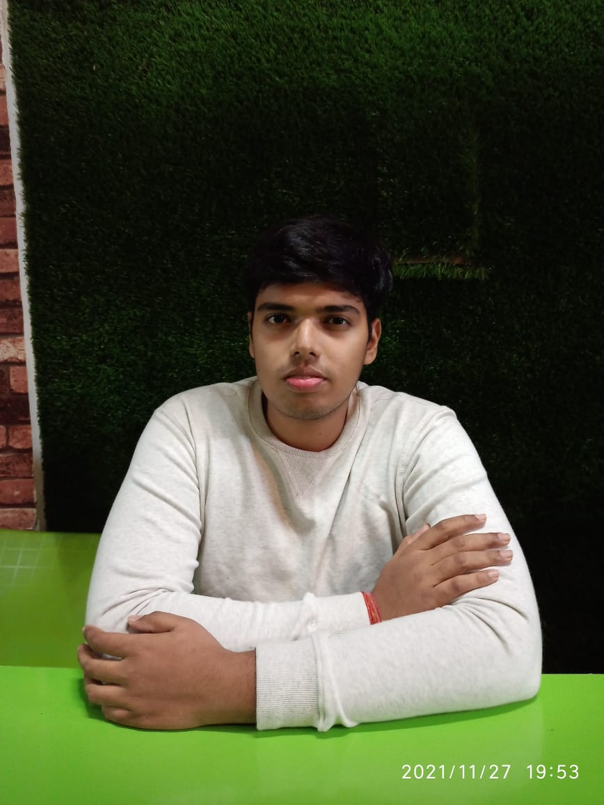

Contact Me
Phone: 9555489941
Email Me:anmol282002@gmail.com
Address:
E-211 Mayur Residency Vistar, Faridi Nagar, Indra Nagar
Lucknow,Uttar Pradesh
India
Summary:
Let me introduce myself, I am Anmol currently pursuing BE from Thapar Institute in Electronics and Communication stream. I am good in logical ability, aptitude based work and had a keen interest in coding. I have completed python, C++( till Oops) and am currently working on Data structures, Algorithms, Database Management and Operating System.
Apart from academic pursuits, I do several exercises to be physically and mentally fit.
Education
- Thapar Institute of Engineering and Technology
Electronics and Communication Engineering
08/2021-06/2025
CGPA: 7.67/10
- City International School, Indira Nagar, Lucknow
Class 12th
2019-2020
Result: 94.6%
- City International School, Indira Nagar, Lucknow
Class 10th
2017-2018
Result: 89.6%
Technical Skills and Interests
- Data Structures
- Algorithms
- Operating System
- DataBase Management System
- Computer Networks
- HTML/CSS/Javascript
Achievements
- Interhouse School Competition: Got a Silver Medal in the Interschool Competition for website designing using
HTML/CSS
- JEE MAINS: Secured a rank of 76,996 in JEE MAINS and got 91.23 percentile